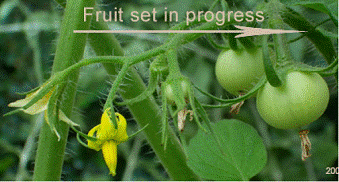

HORT 281 :: Lecture 04 :: ORIGIN, AREA, PRODUCTION, VARIETIES, PACKAGE OF PRACTICES FOR FRUIT VEGETABLES, TOMATO

Origin, area, production, varieties, package of practices for fruit vegetables –tomato
Origin
Tomato is originated in Peru of South America and name of crop came from the Aztec word “Tomato”. The crop is of recent origin and first report of tomato was from Italy in 1544. Later spread was fast and the crop is grown throughout the length and breadth of world.
Area and production
It is amazing to note the quantum jump in the spread of tomato during the last four decades. In India, crop was grown in an area of 36000 ha. during 1960 and present area and production in the country is 4.58 lakh ha. and 74.62 lakh tones respectively with a productivity of 16.29 t/ha. Leading producing states are UP, Karnataka, Maharashtra, Haryana, Punjab and Bihar.
Nutritive value and medicinal use
Tomato occupies a prime position in list of protective foods since it is a rich source of minerals like calcium (48 mg / 100g), sodium (12.9 mg), trace elements, copper (0.19 mg), vitamins like vitamin A (900 IU), vitamin C (27 mg), vitamin B complex (thiamine), essential amino acids and healthy organic acids like citric, formic and acetic acids. The attractive red colour of fruit is due to lycopene and yellow colour is due to carotenes. Peculiar flavour of tomato is due to presence of ethanol, acetaldehyde and a number of volatile flavour components found in fruit. Different forms of tomatine, a steroidal glycoalkaloid, are identified from various parts of plant. Tomato is a good appetizer and its soup is a good remedy for preventing constipation.
Taxonomy
Botanical name of tomato is Solanum lycopersicum (lycos = wolf and persicon = peach). Genus Lycopersicon is divided into two subgenera
- Eulycopersicon (Red fruited and self compatible)
- Eriolycopersicon (Green fruited and self incompatible)
Eulycopersicon includes two species, L. esculentum(Solanum lycopersicum) with large fruits and L. pimpinellifolium ( New name Solanum pimpinellifolium) with small fruits born in clusters. Eriopersicon mainly consists of wild sp like L. hirsutum(S.habrochaites), L. peruvianum,(S. peruvianum) L. pissisi, L. glandulosum, L. cheesmani(S. cheesmani) etc.
Rick (1976) divided genus Lycopersicon into following two groups based on their ability to cross with cultivated tomato:
Esculentum complex (crossable with cultivated tomato)
- L. esculentum, L. pimpinelifolium, L. cheesemani and L. hirsutum
Peruvianum complex (Not crossable with cultivated tomato)
- L. peruvianum, L. chinense.
Solanum lycopersicum S. pimpinellifolium

L. chessmanii L. hirsutum
Based on growth habit and fruit characters, five forms of L. esculentum are identified.
Communae - Common tomato
Cerasiformae - Small fruited cherry tomato
Pyriformae - Pear shaped tomato
Grandifolium - potato leaved tomato
Validum - Erect and upright tomato
Botany
Tomato is a true diploid with 2n=24. Plant is annual with herbaceous prostrate stem having determinate or indeterminate growth habit. In the determinate growth, terminal bud ends in a floral bud and further growth in arrested resulting in dwarf and bushy stature. In indeterminate growth, terminal bud is a leafy bud and terminal and lateral buds continue to grow and there are less production of flowers and fruits on mains tem.
Flowers are borne in racemose cyme and flower cluster is known as ‘truss’ ands its position is extra axillary. Flowers are hermaphrodite, pendulous, pentamerous and hypogenous. Stamens are six in number and inserted on throat of corolla tube and anthers are convent around style.
Tomato is a self pollinated crop due to hermaphrodite flowers, introvert stigma, internal and synchronized anther dehiscence, and stigma receptivity. Self fertilization occurs when pollen grains are shedding during growth of style through anther corn. In warm regions of the country, some amount of crossing was observed when stigma protrudes out the level of anthers.
|  | |
Varieties
Quiet a large number of varieties differing in their climatic requirements, growth habit, fruit quality, resistance to pest and diseases are developed for specific purposes like fresh market, processing, long distance transport etc. A brief description of important varieties are given below:
Developing institution |
Variety |
Special features |
IIHR, Bangalore |
Arka Saurabh * |
Semi determinate. Fruits firm, round and nipple tipped. |
|
Arka Vikas * |
Indeterminate, tolerant to moisture stress condition. |
|
Arka Alok |
Bacterial wilt resistant, determinate. Fruits square and oblong. |
|
Arka Vikas |
Determinate Fruits medium large, oblate Tolerant to mosaic. |
|
Arka Saurabh (Sel.4) * |
Semi-determinate, resistant to fruit cracking, good transport quality. Fruits round firm with nipple tipped. |
|
Arka Ahuti (Sel.11) |
Semi-determinate. |
|
Arka Ashish |
Tolerant to powdery mildew. |
|
Arka Abha (BWR 1) |
Resistant to bacterial wilt, semi-determinate. |
|
Arka Meghali |
Suitable for rain fed cultivation. |
IARI, |
SL 120* |
Resistant to nematode, determinate. Fruits flat round. |
|
Pusa Early Dwarf* |
Determinate. Fruits flat oblate. |
|
Pusa Uphar (DT 10) * |
Determinate. Fruits round with thick pericarp, suitable for processing. |
|
Sioux* |
Indeterminate. Fruits small and round. |
|
Pusa Ruby* |
Indeterminate. Fruits flat round and suitable for processing. |
|
Pusa Sadhabahar |
Suitable for high and low temperature regimes. |
|
Pusa Sheetal |
Cold set variety (8oC or below). Fruits flat round. |
|
Roma |
Suitable for long distance transport, determinate growth. |
|
Pusa Gaurav |
Suitable for processing. |
|
Pusa Rohini |
Longer shelf life. Fruits round. |
IIVR, Varanasi. |
H 24* |
Determinate, resistant to TLCV Fruits flat round. Developed from cross between L. esculentum and L. hirsutum L.glabratum. |
|
DVRT 2* |
Determinate. Developed from cross between Lesciulentum and L. hirsutum f. glabratum. Fruits large and spherical. |
|
Kashi Amrit (DVRT 1) |
Lesculentum (Sel.7) and L. hirsutum f. glabratum through backcross pedigree selection. Fruits spherical with 108 g weight. Suitable for cultivation in TLCV infested period. |
NBPGR, New Delhi |
La Bonita |
Determinate. Fruits oblong with thick pericarp, suitable for long distance transport. |
Kerala Agricultural University, Thrissur |
Mukthi |
Bacterial wilt resistant, semi determinate. Fruits round to flat round without green shoulder. |
|
Sakthi |
Bacterial wilt resistant, semi determinate. Fruits green shouldered and flat round. |
|
Anagha |
Resistant to bacterial wilt and fruit cracking. Semi determinate, round medium sized fruits. |
TamilNadu Agricultural University, Coimbatore |
Marutham (CO.3) * |
Developed by mutation breeding (EMS) from CO.1 determinate. Fruits round and cluttered. |
|
CO.1 |
Semi determinate. Fruits round. |
|
CO.2 |
Indeterminate. Fruits flat round and deep orange red. |
|
PKM 1 |
Induced mutant suitable for long distance transport. |
|
Paiyur 1 |
Suitable for rain fed cultivation. Less incidence of fruit borer. Fruits round, medium sized and slightly ribbing. Suitable for long distance transportation. |
GBPUA&T, Pant Nagar. |
Pant T 3* |
Determinate. Fruits round, suitable for processing. |
|
Pant Bahar* |
Resistant to Verticillium wilt and Fusarium wilt. Indeterminate. Fruits flat round and suitable for processing and storage. |
Haryana Agricultural University, Hisar. |
Sel.32* |
Determinate. Fruits flat round and large. |
|
HS 101* |
Determinate and dwarf. Fruits round. |
|
Hisar Arun (Sel.7) * |
Determinate and dwarf. Fruits round. |
|
HS 110 |
Potato leaved variety. |
|
Hissar Lalima |
Determinate. Fruits round and large. |
|
Hisar Anmol |
Resistant of leaf curl, determinate. Fruits flat round, medium size. Developed by crossing Hisar Aruna nd L. hirsutum f. glabratum. |
|
Hisar Lalit |
Resistant to root knot nematode. Determinate. Fruits medium large and round. |
Punjab Agricultural University, Ludhiana |
Punjab Chuhara* |
Determinate. Fruits pear shaped and suitable for long distance transport, susceptible to TLCV. |
|
Punjab Kesari * |
Determinate. Fruits pear shaped and suitable for long distance transport, susceptible to TLCV. |
|
Punjab Kesari * |
Determinate, dwarf, fruits oval round. |
CASU&T, Kanpur. |
Azad T2 (KS-2) * |
Determinate, early, fruits small round, moderately resistant to leaf curl virus. |
QUA&T, Bhubaneswar |
Uskal Kumar* |
Bacterial wilt resistant, fruits round and medium sized. |
|
Urkal Urbashi (BT12) * |
Bacterial wilt resistant, indeterminate, fruits pear shaped and clustered. |
|
BT 18 |
Bacterial will resistant. |
|
BT 21 |
Bacterial wilt resistant. |
Narendra Dev. Agricultural University, Faizabad, Uttar Pradesh. |
Narendra Tomato 1 |
Indeterminate, fruits large. |
|
Narendra Tomato 2 |
Determinate, suitable for transport and processing. Resistant to nematode |
Assam Agricultural University, Jorhat. |
VC 48-1 |
Bacterial wilt resistant, determinate fruits pear shaped and clustered. |
YS Parmer Univ. of Horticulture and Forestry, Solan. |
Solan Gola |
Round fruits |
HARP, Ranchi |
Swarna Naveen |
Resistant to bacterial wilt. Fruits are of medium size (60 g), oblong, dark red with 5.0%. TSS. Yield 60 t/ha in 120-140 days. Resistant to bacterial wilt. Fruits are of medium size (125 g), dark red with 4.0% TSS. Yield 50.5 t/ha. |
* Varieties released / identified by AICRP (Vegetables).
Hybrid Vigour
Tomato is a classical example for exploitation of hybrid vigour in vegetables. Increasing consumer demand, better emasculation and pollination processes, more seeds per fruit, diversified use and scope for combining large number of favourable genes in F1 coupled with easiness in cultivation makes the crop ideal for heterosis, breeding. Quite a large number of F1 hybrids with specific attributes like yield, earliness, uniformity, high quality, suitability to long distance transport, storage and processing, adaptability to adverse conditions, resistance to biotic and abiotic stresses have been developed by public sector research organizations as well as private sector seed companies. With the adoption of new seed policy by the Government of India in 1988, a large number of private seed companies entered in vegetable research and F1 seed trade. F1 hybrids developed and marketed by the private seed industry are now ruling in many states like Maharashtra, Karnataka, Haryana, Punjab etc. Features of some public sector tomato hybrids are given Table.
In addition, hybrids like Sun 496* (Sungrow seeds, Delhi), HOE 303*, Avinash 2* (Syngeta), BSS 20*, Meenakshi, Tolstoi (Beejo Sheetal), NA 501*, NA 601* (Nath Seeds), Sadabahar, Gulmohar, Sonali, MTH 6* (Mahyco, Jalna), ARTH 3*, ARTH 4* (Ankur Seeds), Rashmi, Vaishali, Rupali, Naveen (IAHS, Bangalore), Swaraksha, Uttam (Namdhari Seeds, Bangalore), Kt 4* (IARI, Katrain) etc. are a few hybrids popular among farmers.
Developing institution |
Variety |
Special features |
Tamil Nadu Agrl. University |
COTH.1 |
Determinate. Fruits round to oblong, slightly acidic, 96 t/ha in 115 days. |
|
COTH 2 |
Semi determinate, fruits are borne in clusters of 4-5, high yield (90.2 t/ha) and resistance to leaf curl virus disease |
IIHR, Bangalore. |
Arka Vardhan* |
Indeterminate, resistant to root knot, nematode, oblate fruits, 75 t/ha in 160 days. |
|
Arka Vishal (FMH 1)* |
Indeterminate. Fruit weight 140 g. round, green shouldered, resistant to cracking, good shelf life. 75 t/ha in 160 days. |
|
Arka Abhijit (BRH 1) |
Determinate. Resistant to bacterial wilt, 63.7 t/ha. |
|
Arka Shresta |
Determinate. Resistant to bacterial wilt, 68.5 t/ha. |
IARI, New Delhi. |
Pusa Hybrid 1* |
Determinate, tolerant to high temperature (upto 23o night temperature) |
|
Pusa Hybrid 2* |
Semi-detrminate, tolerant to nematode, 55 t/ha. |
HARP, Ranchi |
Swarna Baibhav |
Fruits round, deep red, suitable for long distance transportation, average yield 70-80 t/ha. |
Most of commercial F1 hybrids were developed by hand emasculation and pollination by planting female and male parents in the ratio of 12:1. Usually flowers are emasculated in afternoon and pollinated during next day morning with freshly collected pollen. Pollen grains can also be stored for 2-3 days under normal condition for pollination purpose.
Male sterile lines can be utilized for minimizing cost of production of hybrid seeds. Male sterile plants in a population can be identified by their small sized flowers, poorly developed anthers, no anthers, anthers with sterile pollen grains etc. Once a male sterile plant is identified, it has to be stabilized for utilizing it as female parent in commercial production of F1 seeds. Since male sterility is governed by recessive genes (msms), its maintenance is done by crossing with a heterozygous (Msms) fertile parent. The progeny segregates as male sterile (ms ms) and male fertile (Ms ms) plants in the ratio of 1:1. From this, male sterile plants are detected and used in hybrid seed production programme.
Climate
Tomato is a day neutral warm season crop, which cannot tolerate frost. Cool and dry weather is preferred by the crop and optimum temperature is 21-28oC during day and 15-20oC during night. Night temperature is more critical than day temperature. High temperature results in exerted stigma, dryness of stigma, burning of anther tip, poor pollen dehiscence, low pollen viability and slow pollen tube growth leading to low pollination and fruit set. Incidence of viral diseases also will be more at high temperature. Optimum temperature for colour development of fruit is 21-24oC. Development of colouring pigment, lycopene will be hampered above 27oC. Seed germination and pollen germination are adversely effected below 10oC.
Based on night temperature requirement for fruit set, tomato varieties are classified into three.
- Normal set varieties: Set fruits at 15-20oC.
- Hot set varieties: Set fruits above 20oC – eg : Philipine, Punjab Tropic, Pusa hybrid 1.
- Cold set varieties: Set fruits below 15oC – eg : Pusa Sheetal, Avilanche.
Tomato cannot withstand water logging. Hence well drained fairly fertile soil rich in organic matter is preferred. It is moderately tolerant to acid soil having pH 5.5 and ideal pH requirement is 6-7oC.
Sowing time and seed rate
Under mild climatic conditions, where there is no danger of frost, three crops can be raised in a year. In the hills, seeds are usually sown in March-April. In plains is grown during June to November. Under Kerala condition, seeds are sown in September and transplanted in October.
Seed rate
Open pollinated variety: 400-500 g / ha
Indeterminate F2 hybrid: 125-175 g / ha.
Seeds sown in an area of 4-5 cents (200-240 m2) will be sufficient to plant one hectare. Four to five weeks old seedlings are used for transplanting. Hardening of seedling is essential for their establishment in main field and is done by withholding irrigation for one week before transplanting, adding NaC1 (400 ppm) to irrigation water or by spray of cycocel (200 ppm) and Zinc Sulphate (0.25%) + 25 ppm proline at time of transplanting.
Main field preparation and transplanting
Seedlings are transplanted on raised beds or on sides of ridges. Field is ploughed 4-5 times and raised beds of 80-90 cm width or ridges and furrows are prepared. Spacing depends on the growth habit (determinate, indeterminate or semi determinate) of variety and various spacing followed are 60 x 30-45cm, 75 x 60cm and 75 x 75 cm. Usually closer spacing results in early and higher yield, but it may effect size of fruits.
Manures and fertilizers
Manure and fertilizer recommendation for tomato depends on the growth habit and productivity of variety and it varies from state to state. In most of states, in addition to 15-20 tonnes of FYM, 100-125 kg, N, 50-60 kg P2O5 and 50-60 kg K2O are recommended for one hectare. Recommendation for F1 hybrid is 250:250:250 kg NPK/ha.
FYM should be incorporated in soil at the time of final ploughing. 1/3 N, Full P and K may be applied as basal dose either just before transplanting or 5-10 days after transplanting. Remaining 2/3 N is applied 20 and 45 days there after. In Tamil Nadu, additional dose of 10 kg borax and 5 kg Zinc Sulphate, as basal dose, are also recommended for correcting fruit cracking and to increase yield and fruit quality.
Application of fertilizer in Tamil Nadu:
Apply FYM 25 t/ha, N 75 kg, P 100 kg, K 50 kg, Borax 10 kg and Zinc sulphate 50 kg/ha as basal dose and 75 kg N/ha on 30th day of planting during earthing up. Spray 1 ppm (1 mg in one lit) Triacontanol, 15 days after transplanting and at full bloom stage to increase the yield.
Irrigation
Furrow irrigation is the most common method in tomato and the crop require adequate moisture throughout growth period. Frequency of irrigation depends on the climatic and soil conditions. During summer, crop should be irrigated at 3-4 days interval. Water stress at flowering stage will adversely effect fruiting and productivity. A long spell of drought followed by heavy irrigation leads to cracking of fruits. Similarly a dry spell after regular irrigation causes blossom end rot. Drip irrigation and sprinkler irrigation are becoming more common in areas of water shortage.
Inter-cultivation
Field should be kept weed free by frequent weeding, hoeing and earthing up. Application of pendimethalin (1.0 kg a.i. / ha) as pre emergence spray along with one hand weeding at 45 DT is ideal for tomato variety Pusa Ruby. Oxyfluorfen (0.25 kg a.i. / ha) Goal (0.25 kg a.i./ha) and Basalin (1.0 kg a.i. / ha) were also ideal as pre emergence application. Post emergence spray of Sencor (0.5 kg a.i./ha) was also effective at the All India Coordinated trials. Mulching with straw or plastic is also effective for weed control and for regulating soil temperature.
Training and pruning
All indeterminate varieties are trained with wires, strings or stacks to prevent lodging and loss of fruits by coming in contact with soil. It is done by providing individual stack or by erecting 2-2.5 m long poles on either side of ridges for stretching G1 wire. Branches of plants are supported on poles or strings with twine.
Pruning is also generally followed in indeterminate varieties to improve size, shape and quality of fruits. It is removal of unwanted shoots to enhance vigor of plants.
Training
Plant growth regulators
Plant growth regulators are beneficial for early yield, increased fruit set at extreme temperatures and to impart resistance to viral diseases. However, their effect is not seen consistent and varied with genotype, climate, location etc. Some of the growth regulators found useful in tomato production are :
Purpose |
Growth regulator |
Mode and time of application |
High yield |
GA1 (5-25 ppm) |
Seed treatment |
|
PCPA (10-20ppm) |
- |
|
DNOA (25-50ppm) |
- |
|
GA (10 ppm) |
Foliar spray |
|
NAA (1000 ppm) |
- |
|
PCPA (50 ppm) |
- |
|
24 D (5 ppm) |
- |
|
Cytocyme (0.25%) |
- |
Increased fruit set |
NAA (0.1 ppm) |
Seedling soaking for 24 hours |
Increased fruit set |
IAA (50 ppm) |
- |
In summer |
Borax (1.0%) |
- |
For increasing fruit set at low temperature |
PCPA 50-100 ppm |
Foliar spray at flower cluster |
Ripening of fruits |
Ethrel 1000 ppm |
Whole plant spray at the initiation of ripening. |
Harvesting
Crop starts yielding by 70 days after planting. Usually fruits are harvested with hand by a gentle twist so that the stalk is retained on plant. Intervals of harvests depend on season and it is twice in a week during summer and weekly during winter and rainy days. Harvesting maturity depends on the purpose whether for fresh market, processing, long distance transport etc. Following maturity standards are recognized in tomato:
- Mature green:Fruits fully grown, fruit colour changes from green to yellowish and cavity filled with seeds surrounded by gelly like substance. Harvested for long distance market.
- Turning or breaker stage: Fruits firm, 1/4th portion of fruit changes to pink in colour, but the shoulder still yellowish green. Harvested for long distance market.
- Pink stage: 3/4th of whole fruit surface turns pink colour. Harvested for local market.
- Light red: Entire fruit surface is red or pink but the flesh is firm. Harvested for local market.
- Red ripe or hand ripe: Fully ripened and coloured. Flesh becomes soft. Harvested for processing and for seed extraction.
Breaker stageYield
Open pollinated varieties : 20-25 t/ha.
F1 hybrids : 50 t/ha.
Grading storage and marketing
Fruits after harvesting are graded and packed in bamboo baskets or wooden boxes. Four grades specified by Bureau of Indian Standards are Super A, Super, Fancy and Commercial. Since tomato is a climatic fruit, good care should be taken to remove bruised, cracked and damaged fruits before packing in baskets. Though tomato can be stored at low temperature, commercially it is not stored in cold storages in the country due to practical reasons. Fruits can be stored for-two weeks and four weeks at 10-13oC when harvested at red stage and green stage respectively. Pre-cooling of fruits before storage and transportation enhances storage life.
Processing tomatoes
Use of tomato for processing is increasing day by day and a variety of products like puree, paste, syrup, juice, ketchup etc are made. Varieties for processing should have following qualities.
- Deep red colour which retains even after processing.
- Low pH – The acidity of fruits affect-heating time required for sterilization of processed product. Longer time is required if pH is high and hence a pH below 4-5 is required for processing.
- High TSS – Fruits with high TSS yield more finished products / tonne of raw fruits and hence minimum TSS should be 4.5oB
- High viscosity and consistency
- Firm and easy peeling
- Pericarp thickness-should be more than0.5 cm.
- Crack resistance
- Fruits size should be above 50 g and oblong in shape
Varieties like Pusa Gaurav, Roma, Punjab Chuhara, Pusa Uphar, Arka Saurabh are specially suited for processing.
Physiological disorders
Fruit cracking
Fruit cracking is caused both by genetic and environmental factors. Following four types of cracking are noticed tomato.
- Radial Cracking:Usually seen at ripe stage and crack radiate from pedicel end to stylar end.
- Concentric cracking:Seen around shoulder of fruit even at green stage.
- Cuticular: Seen on outer skin of fruit.
- Burst:Burst occurs at certain points on shoulder of fruit.
Radial and concentric cracking are more common of which, former is more damaging. A long spell of drought followed by sudden heavy irrigation may cause cracking. Wide variation in day and night temperatures and high humidity also cause fruit cracking.
Many crack resistant varieties like Crack Proof, Ohio 832, Sioux, Manulucie, Anagha etc. were developed at various research organizations. Fruits of crack resistant varieties have thick pericarp or cuticle and fruit skin with high elasticity and less acidity. Pectin content in resistant varieties ranges from 0.8 to 1.6% compared to 0.54% in susceptible ones. High pectin concentration makes fruit less rigid and more pliable.
Blossom red rot
Water soaked spots of one cm or more appear at point of attachment of petals and effected portion becomes sunken, leathery and dark coloured. This is mainly due to reduced soil moisture supply and high rate of respiration at the time of fruit development. Deficiency of calcium also causes this disorder. Balanced irrigation, cultural practices to conserve soil moisture and spraying of 0.5% calcium chloride at fruit development stage are recommended for control of blossom end rot.
Sun scald
Due to extreme heat, tissues on exposed fruit develop a blistered appearance leading to sunken areas, which have a light or grey colour on green fruit and yellow colour on red fruit. In varieties with heavy foliage, fruits are shaded and incidence of sun scald is less.
1. New botanical nomenclature for tomato
2. _______ is the stage of harvest for long distance transport
3. Temperature tolerance for hot set varieties
4. Processing tomato should contain __________ T.S.S.
5. Calcium deficiency leads to ____________
| Download this lecture as PDF here |